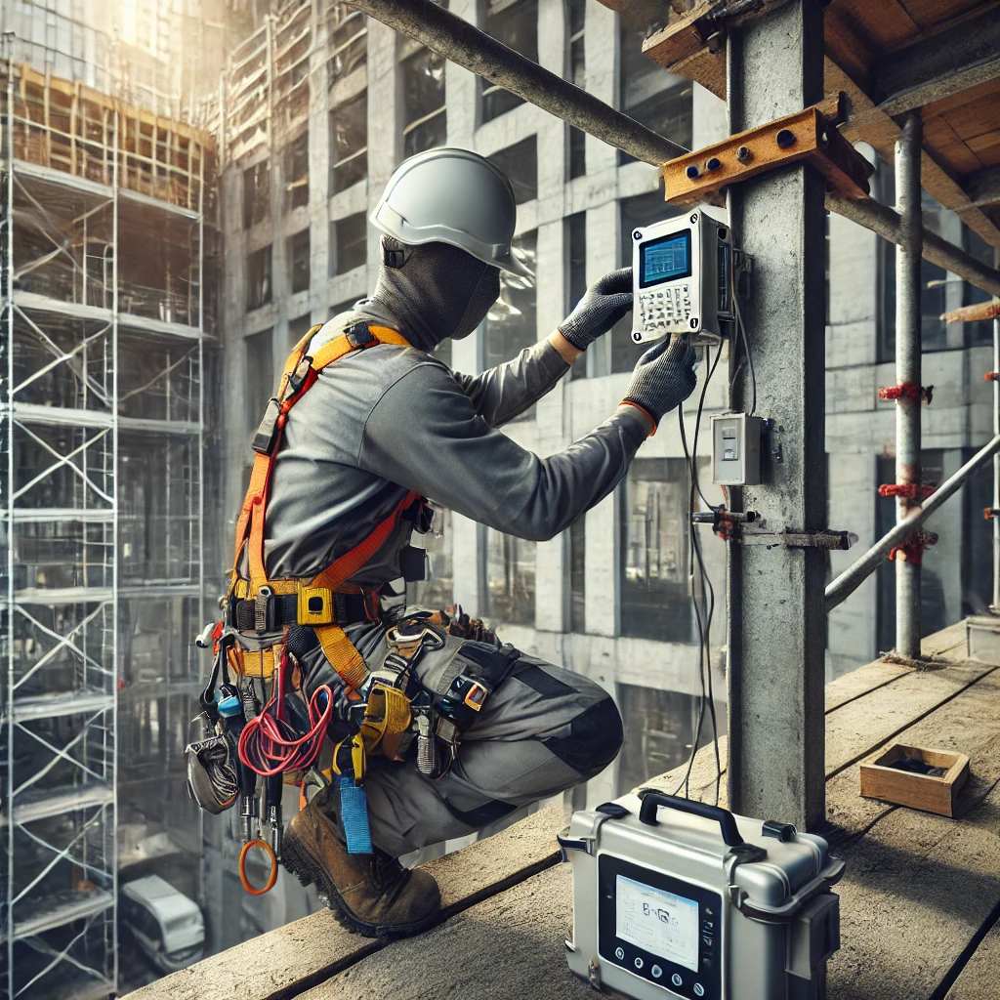

Structure Health Monitoring System (SHMS): Memastikan Kesehatan Infrastruktur Anda
Dalam dunia konstruksi dan manajemen infrastruktur, memastikan kesehatan dan keselamatan struktur adalah hal yang krusial. Structure Health Monitoring System (SHMS) adalah solusi canggih yang dirancang untuk memantau dan mengevaluasi kondisi struktur secara real-time. Dengan teknologi ini, kita dapat mendeteksi potensi masalah sebelum menjadi bencana.
Apa Itu SHMS?
Structure Health Monitoring System (SHMS) adalah sistem yang menggunakan berbagai sensor dan teknologi untuk memantau kondisi struktural dari berbagai jenis bangunan dan infrastruktur, seperti jembatan, gedung, dan terowongan. Sistem ini mengumpulkan data mengenai berbagai parameter seperti getaran, pergeseran, dan deformasi, yang kemudian dianalisis untuk menilai kesehatan struktur.
"Deteksi dini dapat menghindarkan kita dari risiko kerusakan besar di masa depan."
Manfaat SHMS
- Deteksi Dini Masalah: SHMS memungkinkan deteksi dini terhadap kerusakan atau penurunan kualitas struktur, yang bisa mencegah kegagalan struktural yang lebih serius di masa depan.
- Peningkatan Keselamatan: Dengan memantau kondisi struktur secara real-time, SHMS membantu dalam menjaga keselamatan pengguna dan mencegah kecelakaan yang disebabkan oleh kerusakan struktur.
- Penghematan Biaya: Mengidentifikasi masalah sejak dini dapat mengurangi biaya perbaikan yang mahal dan mengurangi kebutuhan untuk inspeksi manual yang sering.
- Pemeliharaan Preventif: Data yang dikumpulkan oleh SHMS dapat digunakan untuk merencanakan pemeliharaan preventif, sehingga mengoptimalkan kinerja dan umur panjang struktur.
SHMS mengintegrasikan berbagai teknologi canggih, termasuk:
- Sensor Getaran: Mengukur getaran yang terjadi pada struktur untuk mendeteksi potensi kerusakan atau deformasi.
- Sensor Strain: Mengukur perubahan bentuk atau deformasi pada struktur untuk memantau kekuatan dan stabilitasnya.
- Sensor Kelembapan dan Suhu: Mengawasi kondisi lingkungan yang dapat mempengaruhi kesehatan struktur, seperti kelembapan yang dapat menyebabkan korosi.
- Sistem Pemrosesan Data: Mengumpulkan dan menganalisis data dari sensor untuk memberikan laporan yang akurat tentang kondisi struktur.
Aplikasi SHMS
SHMS dapat diterapkan pada berbagai jenis struktur dan infrastruktur, termasuk:
- Jembatan: Memantau kekuatan dan stabilitas jembatan untuk mencegah kegagalan yang dapat mengakibatkan kecelakaan lalu lintas.
- Gedung: Mengawasi kesehatan gedung tinggi dan bangunan bersejarah untuk memastikan keselamatan penghuninya.
- Terowongan: Menilai kondisi terowongan dan struktur bawah tanah untuk mencegah keruntuhan dan memastikan operasional yang aman.
Kesimpulan
Structure Health Monitoring System (SHMS) adalah alat yang sangat berharga untuk memastikan kesehatan dan keselamatan infrastruktur kita. Dengan menggunakan teknologi canggih untuk memantau dan menganalisis data, SHMS membantu mencegah kerusakan serius dan menjaga keselamatan publik. Investasi dalam SHMS adalah langkah proaktif untuk melindungi aset berharga dan memastikan keberlanjutan struktur.